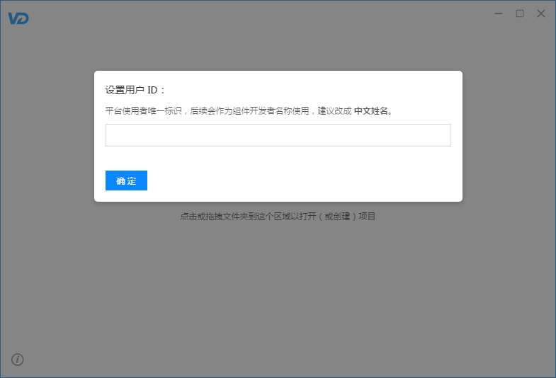
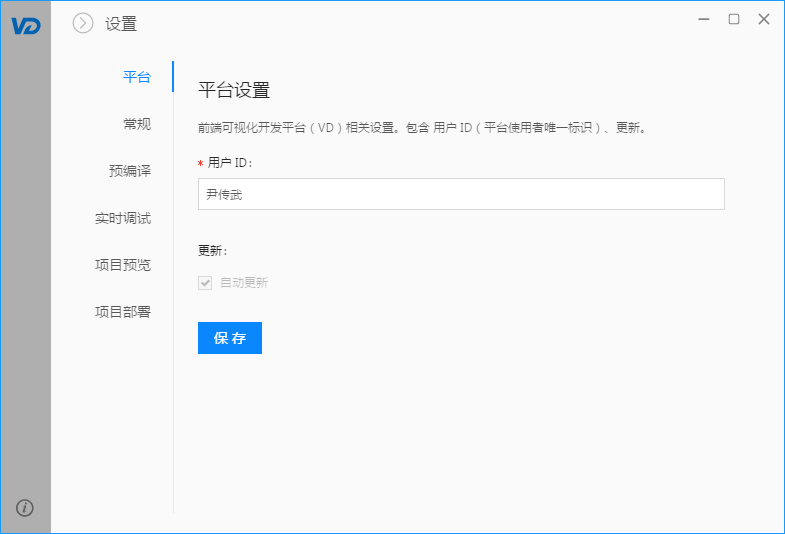

VD 为了解决项目多人协同开发过程中遇到的诸多问题，强制用户设置用户 ID。用户 ID 是平台使用者唯一标识，后续会作为组件开发者名称使用，建议改成辨识度高的标识（eg：中文姓名）。
VD 推崇组件化开发，组件与开发者相对应，组件在其生命周期内的需求变更、迭代、优化、维护都将由与之对应的开发者推进。
首次进入平台，需设置用户 ID：

后续如需修改用户 ID，可通过 全局设置 > 平台 进行更改：
